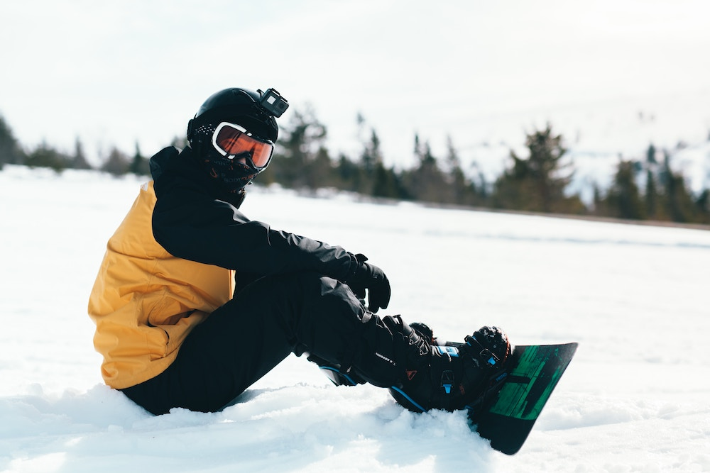

The Summit at Mount Lemmon is an incredible place to enjoy the snow-filled winter season. Located in the Santa Catalina Mountains of Arizona, The Summit is the highest point in the range, reaching a peak of 9,157 feet. This makes it the perfect destination for snowboarding. The Summit offers many slopes and trails for all levels of snowboarders. Beginners can start on the easy green-level runs while more experienced boarders can take on the more challenging black-level trails. There is also a Playground area for those looking for tricks and jumps. The Summit also offers a unique snowboarding experience with its night skiing and snow tubing. On clear nights, the slopes are lit up and riders can enjoy an evening of snowboarding at the Summit. The Summit also has ski and snowboard rentals and lessons available for those who want to try something different. For those looking for a truly unforgettable snowboarding experience, The Summit at Mount Lemmon is the perfect destination.
